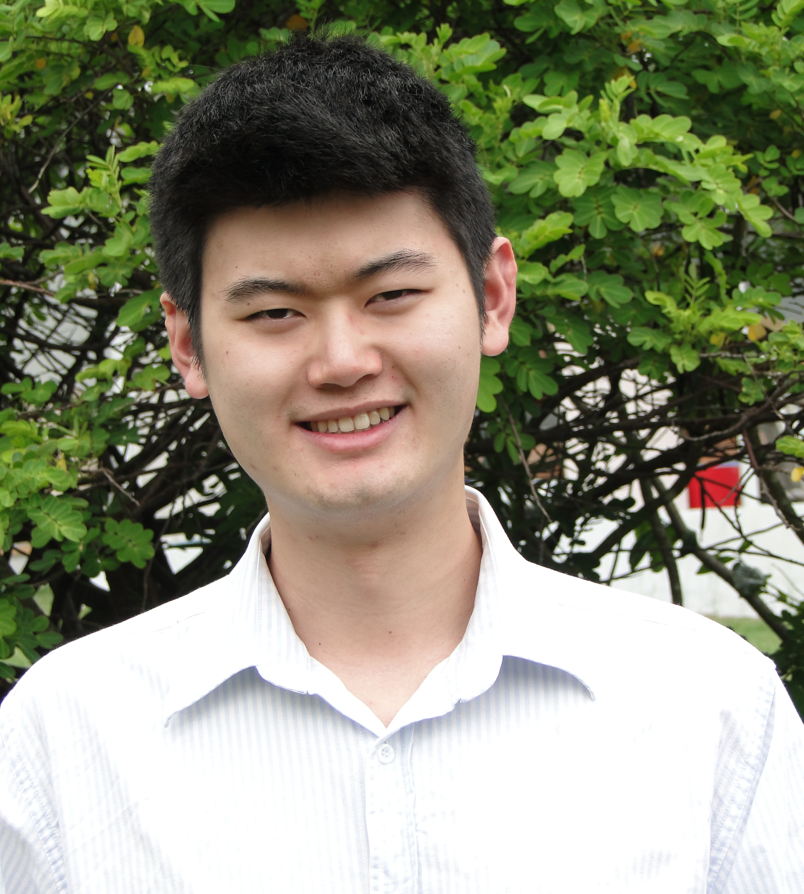

Our Team
Robert Schultz
Technical Director & Founder.

Robert has over 40 years experience in research, development & commercialisation of industrial equipment and processing applications. Extensive International equipment sales, support and distribution background.
Tory Shenstone
Commercial Director & Founder

Bachelor of Business (Honours) - Queensland University of Technology. MPM. AICD. Tory has over 20 years experience in Project Management in industrial applications for petroleum, power and water facilities. Strong Project Management and commercial background.
Dr Graeme Millar
Chemical Scientist

Doctor of Philosophy (Physical Chemistry). Bachelor of Science (Honours 1st Class, Chemistry). Professor at Queensland University of Technology in the area of Industrial Chemistry, Process Engineering & Clean Technologies. Over 30 years industrial engineering & technology design, process and commercialisation.
Jacky Lui
Software and Electronics Developer
Bachelor of Mechatronics Engineering - Queensland University of Technology (Dean's Scholars Program) Specialises in software and electronic engineering. Developed software applications for multiple plants including being the foundation developer of Nature’s Way POU control systems architecture.